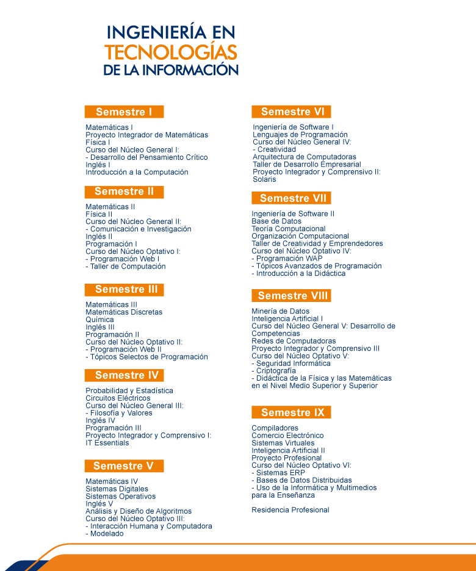

Ingeniería en Tecnologías de la Información (ITI)
Nivel: Licenciatura
Título otorgado: Ingeniería en Tecnologías de la Información
Duración: 9 Semestres
Descripción carrera:
El Ingeniero en Tecnologías de la Información aplica sus sólidos conocimientos al diseño, desarrollo e instrumentación de soluciones informáticas que requieren las organizaciones, atendiendo las necesidades humanas derivadas de la interacción con la computadora. Es competente para mantener equipos de cómputo operando eficientemente y ofrece al usuario soluciones integrales a los problemas asociados con el área computacional.
Los Objetivos del Plan de Estudios de la Ingeniería en Tecnologías de la Información que ofrece la Universidad Politécnica de San Luis Potosí enfatizan siete aspectos importantes en la formación del Ingeniero, que le confieren una sólida preparación para desempeñarse exitosamente en el mundo laboral:
- Adquisición y empleo adecuado de los conocimientos de las Matemáticas y las Ciencias Básicas, como fundamentos para un ejercicio amplio de la profesión
- Manejo diestro de los conocimientos de las tecnologías
- Uso y desarrollo de la tecnología de la información para la innovación
- Aplicación de métodos de investigación para identificar problemas y desarrollar soluciones de manera independiente
- Formación flexible apoyado en un Sistema de Tutorías para el uso eficiente del tiempo y la recuperación del conocimiento adquirido a través de otros medios
- La adquisición de bases teóricas para continuar con estudios de postgrado.
Al finalizar los alumnos de Ingeniería en Tecnologías de la Información deben realizar una residencia profesional de 480 horas, donde ponen en práctica lo que se aprendió en las aulas; aunque en muchas de las materias de Ingeniería en Tecnologías de la Información se deben realizar proyectos finales de aplicación en la industria y la investigación que permitan un acercamiento vivencial temprano en su carrera.
Se tiene también la actividad del capítulo estudiantil de la ACM (Association for Computing Machinery), que tiene como finalidad el fomentar la ética profesional en los alumnos, contribuir al desarrollo de las capacidades de los estudiantes mediante los diferentes concursos de programación promovidos por ACM, y mejorar la calidad de la educación en la institución mediante la realización y participación en los diferentes talleres, conferencias y congresos organizados por ACM.
Los alumnos de Ingeniería en Tecnologías de la Información pueden ser miembros del club de robótica en el cual los estudiantes podrán aplicar sus conocimientos de matemáticas, física, programación de computadoras, habilidades como análisis, lógica y capacidad de abstracción para elaborar rutinas sofisticadas que generen movimientos en los robots LEGO.
Misión del Programa Educativo
“El Programa Educativo de la carrera de Ingeniería en Tecnologías de la Información está comprometido con la excelencia en la formación integral y humana, y con el aprendizaje, el desarrollo y aplicación del conocimiento en los campos de desarrollo e implementación de software, ofreciendo una solución integral a los problemas asociados con el área computacional. Está comprometido con la sociedad para mantener una oferta educativa pertinente en el área y desarrollar investigación aplicada involucrando alumnos en la solución de problemas tecnológicos de la sociedad. “ ProPE 2016-2017
Plan de estudios
Consulta Plan de Estudios
-

Infraestructura / Recursos
LABORATORIOS ITI
Los estudiantes de la carrera de Ingeniería en Tecnologías de la Información cuentan con acceso a la siguiente infraestructura:
- Edificio del Centro de Nuevas Tecnologías
- Laboratorio de Redes (CCNA-Cisco)
- Laboratorio de Telecomunicaciones
- Laboratorio de Tecnologías SUN
- Centro de Software Libre
- Laboratorio de Cableado Estructurado
- Laboratorio de Arquitectura de Computadoras
- Laboratorios especializados:
- Ingeniería de Software
- Seguridad Informática
- Comercio Electrónico
- Procesamiento Digital
- Software:
- Maple
- Matlab
- Interactive Physics
- IBM Rational Rose
- Oracle
- Cisco Packet Tracer
- Microsoft Campus Agreement
- Software para el aprendizaje del Inglés
- Solaris
- Java
- entre otros
Certificaciones:
- Oracle Certified Associate, MySQL 5
- Oracle Certified Professional, MySQL 5.6 Developer
- Oracle Certified Associate, Java SE 5/SE 6
- Oracle Certified Professional, Java SE 6 Programmer
- Oracle Certified Associate, Java SE 7 Programmer
- Oracle Certified Associate, Oracle Solaris 10 Operating System
- Oracle Certified Professional, Oracle Solaris 10 System Administrator
- Oracle Certified Associate, Oracle Solaris 11 System Administrator

- Cisco Certified Entry Networking Technician (CCENT)
- Cisco Certified Network Associate (CCNA)

Logros / Distinciones:
- Mejor Academia a nivel Latinoamérica que promueve la certificación, el programa Cisco Networking Academy Program y que forma nuevos estudiantes en el área de TI
- 3 medallas a estudiantes ejemplares otorgadas por la asociación Trayectoria de Éxito.
- 1er, 6º, 5º lugar concurso Netriders México, 2009, 2011 y 2013.
- 1er lugar expo ciencias otorgada por la Red Nacional de Actividades Juveniles en Ciencia y Tecnología, 2012 y 2013.
- 5º y 6º lugar en el Torneo Mexicano de Robótica, 2016.
- 150+ Certificaciones CCNA y CCENT como Academia CCNA
- 480+ Certificaciones JAVA y Solaris como Academia Oracle.
Docentes:
Dr. Omar Montaño Rivas – Profesor de Tiempo Completo
M.C. Víctor Manuel Fernández Mireles
M.C. Rafael Llamas Contreras - Profesor de Tiempo Completo
MTI Liliana Gámez Zavala
Dr. Francisco Cruz Ordaz Salazar
Perfil de egreso:
El Ingeniero en Tecnologías de la Información tiene los conocimientos necesarios de software y hardware en interacción con el factor humano, para ofrecer una solución integral a los problemas asociados con el área computacional.
Campo de trabajo:
Un Ingeniero en Tecnologías de la Información tiene la posibilidad de desarrollarse en industrias dedicadas tanto a la transformación como a los servicios, siempre buscando la mejora. Por lo anterior puede contratarse en:
- Tv Azteca D.F Ajusco
- Tyssenkrupp Mexinox Create It
- Swarm Insights
- Seiton Gestión de Documentos SA de CV
- Infosys Triara Mexichem
- Aromáticos La Victoria
- Internacional de Sistemas de Imagen, León Gto.
- Estratel TECH ENERGY & GROUNDING MX S.A. DE C.V.
- CFE
- Universidad Autónoma de San Luis Potosí
- Draexlmaier Automotive
- SMARTbt SA DE CV
- Servicios de Salud de San Luis Potosí
- ABB
- Softtek
- CONALEP
- CISTEL
- SEGE
Ligas de Interés
- ACM
- Academia CISCO
- Academia ORACLE
- ¿Por qué estudiar carreras relacionadas con las TIC?
- Déficit de ingenieros en el área
- Facebook: ATIT UPSLP
Contacto
Coordinación de Ingeniería en Tecnologías de la Información
Karina Hernández Leyva
Asistente de Ingeniería en Tecnologías de la Información
Teléfono: (444) 870 – 21 – 00 Ext. 223
Dr. Juan Antonio Cabrera
Coordinador de Ing. en Tecnologías de la Información
iti@upslp.edu.mx